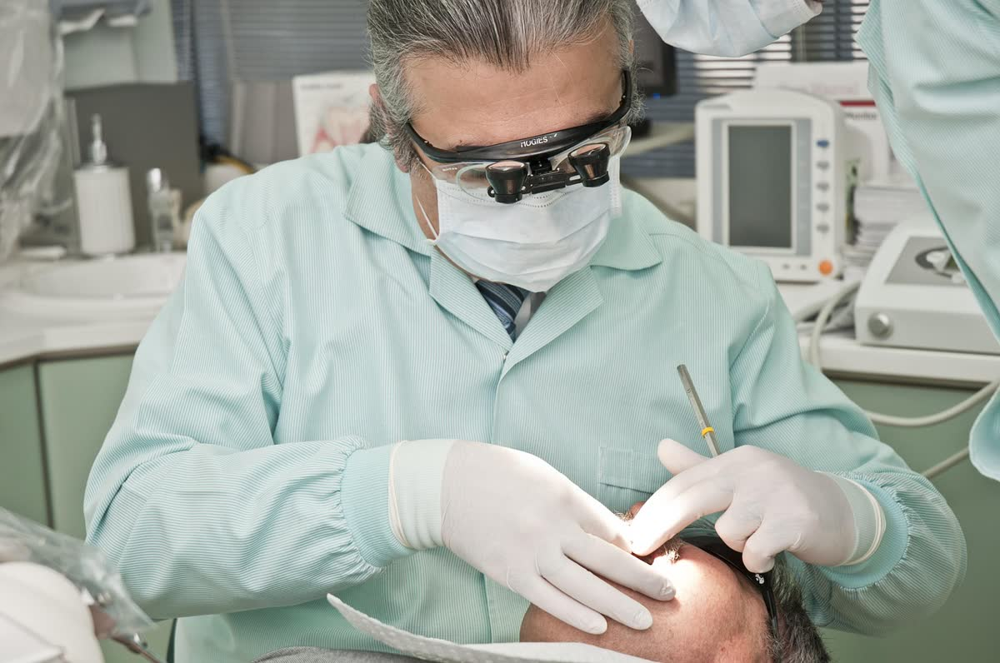

Kemer'de Sağlıklı Gülüşler İçin Profesyonel Diş Hekimliği Hizmetleri
Orange Dental olarak, Kemer merkezdeki kliniğimizde ağız ve diş sağlığınızı korumak için özenle çalışıyoruz. Modern yöntemlerle sağlığınızı ön planda tutan bir yaklaşım benimsiyoruz.
★★★★★ 5 · 2 Google yorumu


